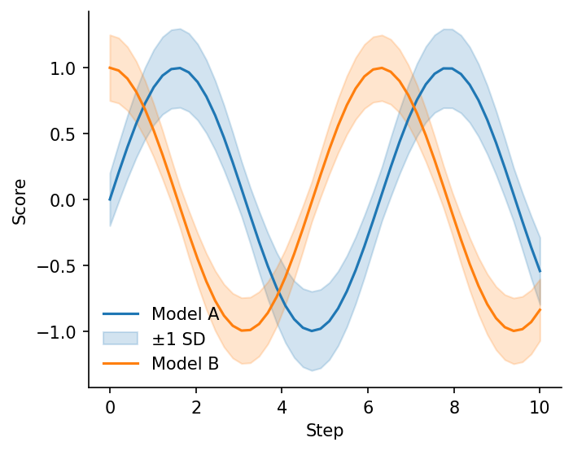
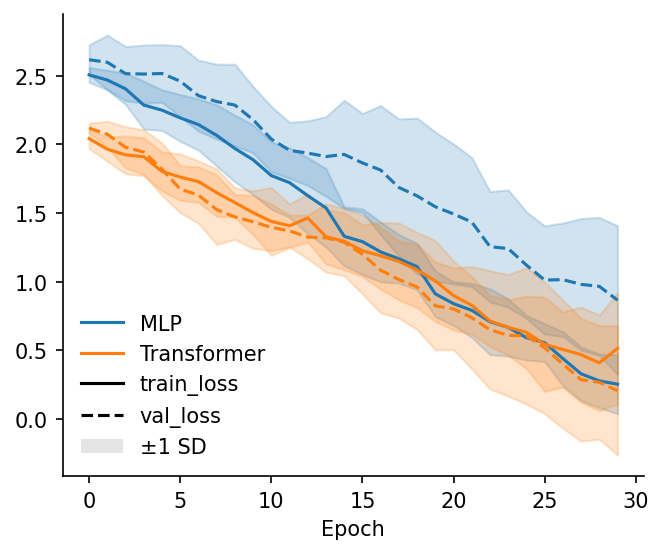
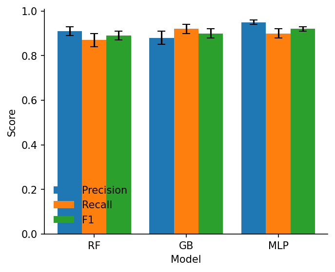
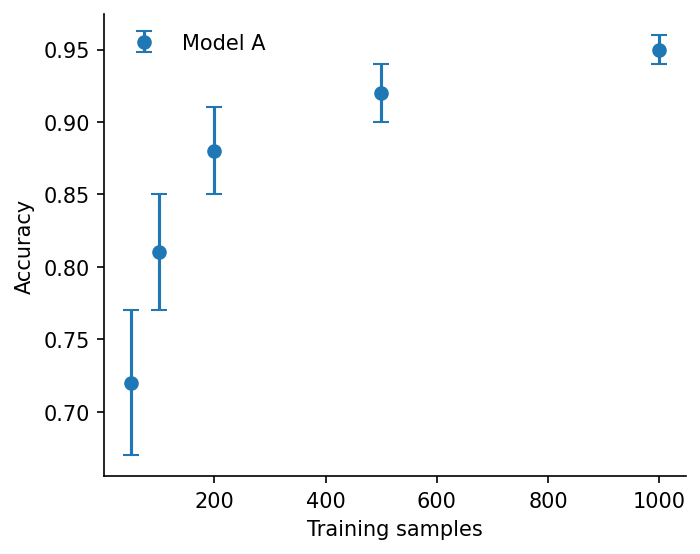
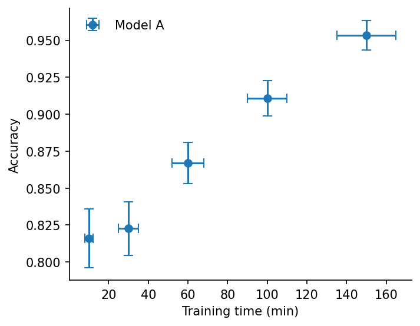
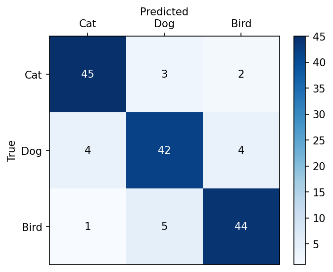
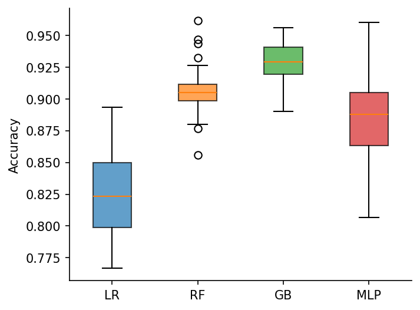
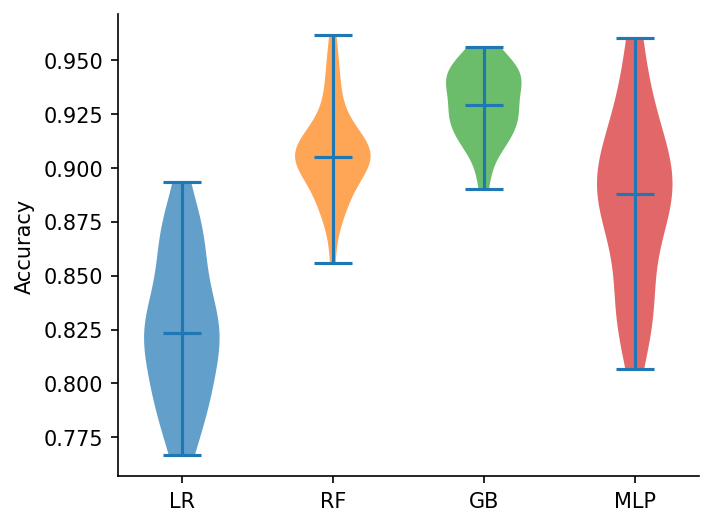
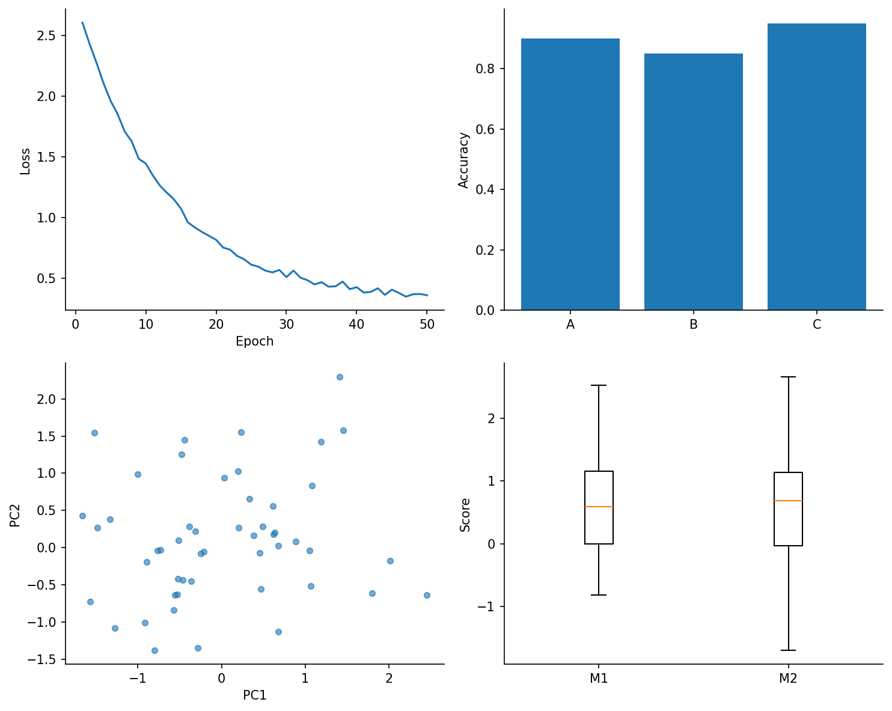

A fallback reference showing how to produce each plot in the cleanplots gallery using only matplotlib (plus numpy and pandas for data). The results approximate the cleanplots versions; exact styling details (sparse ticks, automatic colored legend labels, etc.) are omitted.
import numpy as np
import pandas as pd
import matplotlib.pyplot as pltA small helper mirrors the cleanplots default of hiding the top and right spines.
def clean_spines(ax):
ax.spines['top'].set_visible(False)
ax.spines['right'].set_visible(False)cp.line(..., err=...) unpacks to plot +
fill_between.
f, ax = plt.subplots(figsize=(5, 4))
line1, = ax.plot(x, y1, label='Model A')
ax.fill_between(x, y1 - e1, y1 + e1, alpha=0.2,
color=line1.get_color(), label='±1 SD')
line2, = ax.plot(x, y2, label='Model B')
ax.fill_between(x, y2 - e2, y2 + e2, alpha=0.2,
color=line2.get_color())
ax.set_xlabel('Step'); ax.set_ylabel('Score')
ax.legend(frameon=False)
clean_spines(ax)
The pivot case (rows → colors, columns → line styles, with shared error bands) needs a nested loop and a hand-built two-axis legend. This is the most verbose matplotlib equivalent in the gallery.
f, ax = plt.subplots(figsize=(5, 4))
row_colors = plt.rcParams['axes.prop_cycle'].by_key()['color']
line_styles = ['-', '--', ':', '-.']
epochs_x = np.arange(num_epochs)
for i, model in enumerate(pivot.index):
color = row_colors[i % len(row_colors)]
for j, metric in enumerate(pivot.columns):
ls = line_styles[j % len(line_styles)]
y = np.asarray(pivot.loc[model, metric])
e = np.asarray(pivot_std.loc[model, metric])
ax.plot(epochs_x, y, color=color, linestyle=ls)
ax.fill_between(epochs_x, y - e, y + e, color=color, alpha=0.2)
# Hand-built two-axis legend: one entry per model (color) and per metric (linestyle)
model_handles = [plt.Line2D([0], [0], color=row_colors[i], linestyle='-', label=m)
for i, m in enumerate(pivot.index)]
metric_handles = [plt.Line2D([0], [0], color='black', linestyle=line_styles[j], label=m)
for j, m in enumerate(pivot.columns)]
band_handle = plt.Rectangle((0, 0), 1, 1, facecolor='gray', alpha=0.2, label='±1 SD')
ax.legend(handles=model_handles + metric_handles + [band_handle], frameon=False)
ax.set_xlabel('Epoch')
clean_spines(ax)
Manual offset arithmetic per column.
f, ax = plt.subplots(figsize=(5, 4))
n_groups = len(bar_df.columns)
x_pos = np.arange(len(bar_df.index))
width = 0.8 / n_groups
for i, col in enumerate(bar_df.columns):
offset = (i - (n_groups - 1) / 2) * width
ax.bar(x_pos + offset, bar_df[col].values, width=width,
yerr=bar_err[col].values, capsize=4,
error_kw=dict(linewidth=1.5), label=col)
ax.set_xticks(x_pos)
ax.set_xticklabels(bar_df.index)
ax.set_xlabel('Model'); ax.set_ylabel('Score')
ax.legend(frameon=False)
clean_spines(ax)
Use errorbar with fmt='o' rather than
scatter + manual errorbars.
f, ax = plt.subplots(figsize=(5, 4))
ax.errorbar(x, y, yerr=y_errs, fmt='o', capsize=4, label='Model A')
ax.set_xlabel('Training samples'); ax.set_ylabel('Accuracy')
ax.legend(frameon=False)
clean_spines(ax)
Same call, pass both xerr= and yerr=.
f, ax = plt.subplots(figsize=(5, 4))
ax.errorbar(x, y, xerr=xerrs, yerr=yerrs, fmt='o', capsize=4, label='Model A')
ax.set_xlabel('Training time (min)'); ax.set_ylabel('Accuracy')
ax.legend(frameon=False)
clean_spines(ax)
imshow + manual cell annotation with contrast-aware text
color + manual tick labels.
f, ax = plt.subplots(figsize=(5, 4))
values = conf_matrix.values
im = ax.imshow(values, cmap='Blues', aspect='auto')
ax.set_xticks(range(len(conf_matrix.columns)))
ax.set_xticklabels(conf_matrix.columns)
ax.set_yticks(range(len(conf_matrix.index)))
ax.set_yticklabels(conf_matrix.index)
ax.xaxis.set_label_position('top')
ax.tick_params(top=True, bottom=False, labeltop=True, labelbottom=False)
threshold = (values.min() + values.max()) / 2
for i in range(values.shape[0]):
for j in range(values.shape[1]):
color = 'white' if values[i, j] > threshold else 'black'
ax.text(j, i, f'{values[i, j]:d}', ha='center', va='center', color=color)
f.colorbar(im, ax=ax)
ax.set_xlabel('Predicted'); ax.set_ylabel('True')
f, ax = plt.subplots(figsize=(5, 4))
cycle = plt.rcParams['axes.prop_cycle'].by_key()['color']
bp = ax.boxplot(list(data.values()), tick_labels=list(data.keys()),
patch_artist=True)
for i, patch in enumerate(bp['boxes']):
patch.set_facecolor(cycle[i % len(cycle)])
patch.set_alpha(0.7)
ax.set_ylabel('Accuracy')
clean_spines(ax)
violinplot returns a dict whose 'bodies'
entry is the list of PolyCollections to color individually. Tick labels
have to be set separately since violinplot doesn’t accept a
tick_labels= kwarg.
f, ax = plt.subplots(figsize=(5, 4))
vp = ax.violinplot(list(data.values()), showmeans=False, showmedians=True)
for i, body in enumerate(vp['bodies']):
body.set_facecolor(cycle[i % len(cycle)])
body.set_alpha(0.7)
ax.set_xticks(range(1, len(data) + 1))
ax.set_xticklabels(list(data.keys()))
ax.set_ylabel('Accuracy')
clean_spines(ax)
f, axes = plt.subplots(2, 2, figsize=(10, 8))
axes[0, 0].plot(epochs, train_loss)
axes[0, 0].set(xlabel='Epoch', ylabel='Loss')
axes[0, 1].bar(['A', 'B', 'C'], [0.9, 0.85, 0.95])
axes[0, 1].set_ylabel('Accuracy')
pts = np.random.randn(50, 2)
axes[1, 0].scatter(pts[:, 0], pts[:, 1], s=20, alpha=0.6)
axes[1, 0].set(xlabel='PC1', ylabel='PC2')
axes[1, 1].boxplot([s1, s2], tick_labels=['M1', 'M2'])
axes[1, 1].set_ylabel('Score')
for a in axes.flat:
clean_spines(a)
f.tight_layout()